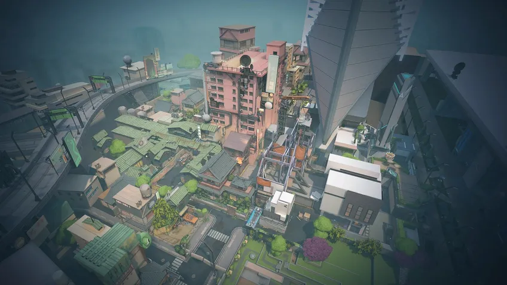
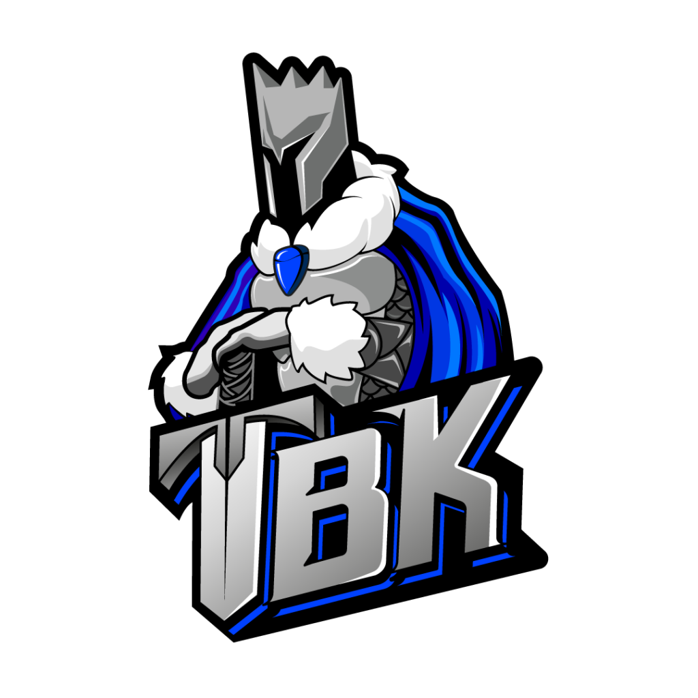

Sobre o jogo
Valorant é um jogo eletrônico multijogador gratuito para jogar de tiro em primeira pessoa desenvolvido e publicado pela Riot Games. É o primeiro jogo do gênero desenvolvido pela empresa, sendo anunciado pela primeira vez com o codinome Project A em outubro de 2019, em um evento de comemoração de 10 anos de League of Legends.Foi lançado em 2 de junho de 2020 para Microsoft Windows.
Valorant é desenvolvido e publicado pela Riot Games, conhecida pelo grande sucesso League of Legends. O desenvolvimento começou em 2014, dentro de sua divisão de pesquisa e desenvolvimento.Joe Ziegler, o diretor do jogo, é creditado por criar a ideia inicial de Valorant ao formular outros títulos que a Riot poderia desenvolver ao conversar com designers de outros jogos. David Nottingham é o diretor criativo do jogo.[6] Valorant foi construído na Unreal Engine 4.
Até janeiro de 2022, o jogo apresentava quatro episódios, incluindo 18 agentes (personagens) e 7 mapas. Em termos de gameplay, durante a sua experiência nas partidas, é possível adquirir 18 armamentos diferentes. Além disso, o jogo é bem envolvido com eSports, tendo times como Team Vikings, Sharks Esports, Team Liquid, Sentinels, entre outros. Depois de seu lançamento oficial, três modos de jogo foram adicionados, a Disputa de Spike, Mata-Mata, e Replicação. O jogo conta com uma mecânica de passe de batalha que permite o jogador colecionar até 50 itens através da experiência obtida ao jogar partidas.
Melhores Jogadores
Nesses últimos anos os melhores jogadores de valorant do Brasil são :

Aspas
Erick “aspas” Santos é o jogador mais skillado desse elenco da LOUD. A habilidade de aspas é tão grande, que o jogador chegou a ser acusado de usar cheater.

Sacy
O primeiro e principal jogador da equipe é Gustavo “sacy” Rossi. Não há nenhuma dúvida de que o atleta, hoje, é um dos melhores e mais completos em atividade no cenário brasileiro

Pancada
Bryan “pAncada” Luna é um dos melhores controladores de VALORANT no Brasil, atualmente.O atleta é muito reconhecido também por possuir uma mira precisa.

Less
Felipe “Less” Basso é a jovem promessa dessa escalação da LOUD. O jogador tem apenas 16 anos e já mostrou que tem um futuro brilhante pela frente. A função principal que desempenha é a de Sentinela.

Saadhak
O ex-jogador da Team Vikings, Matias “Saadhak” Delipetro foi peça fundamental na temporada vitoriosa da equipe e Levou o time para duas competições internacionais.

Xand
Alexandre “xand” Zizi dispensa apresentação. Um dos nomes mais experientes que o VALORANT brasileiro possui atualmente, ele fez história no Counter-Strike: Global Offensive.
Mapas do Valorant :
/i598945.jpeg)
Fracture
Um local de pesquisas altamente confidencial, que foi partido ao meio por um experimento mal sucedido.
/i598948.jpeg)
Breeze
Breeze é o mapa tropical de VALORANT. Sua principal característica é possuir bombsites (onde as spikes são plantadas) extremamente largos e amplos.

Icebox
Icebox é um mapa marcado pela sua verticalidade, ou seja, os jogadores precisam ficar atentos não apenas à sua linha de visão, mas também à cima.

Bind
Bind é muito dividido entre esquerda e direita; praticamente não tem meio. Por ter poucas possibilidades de entrada no bombsite, o mapa pode dar uma leve vantagem aos defensores.

Haven
Haven é o único mapa de VALORANT com três bombsites: A, B e C. Apesar disso, é um mapa pequeno, estreito e com longos corredores

Split
Outro mapa com corredores estreitos, Split pode precisar de agentes sentinelas, como Sage e Cypher: a primeira pode "paredar" o meio, e o segundo consegue vigiar e posicionar armadilhas no B.

Pearl
Este é o primeiro mapa de VALORANT na Terra Ômega (a outra realidade do nosso planeta, Alpha). Aqui, os atacantes da nossa Terra avançam em direção à Terra inimiga, mas descobrem que, lá, os agentes são idolatrados como heróis.

Ascent
Ascent tem um meio enorme e dominá-lo pode ser crucial para a vitória. Nos bombsites, também há portas interativas, que podem ser fechadas (e destruídas).
Principais Organizações

LOUD
Um local de pesquisas altamente confidencial, que foi partido ao meio por um experimento mal sucedido.

NIP
Breeze é o mapa tropical de VALORANT. Sua principal característica é possuir bombsites (onde as spikes são plantadas) extremamente largos e amplos.

VIVO KEYD
Icebox é um mapa marcado pela sua verticalidade, ou seja, os jogadores precisam ficar atentos não apenas à sua linha de visão, mas também à cima.

TBK
A TBK Esports é a mais nova organização no cenário brasileiro de eSports. Criada em parceria com a Gaming Culture, o time conta com a line-up da antiga NOORG 2.0 para disputar o VALORANT Championship Tour Brasil em 2022.